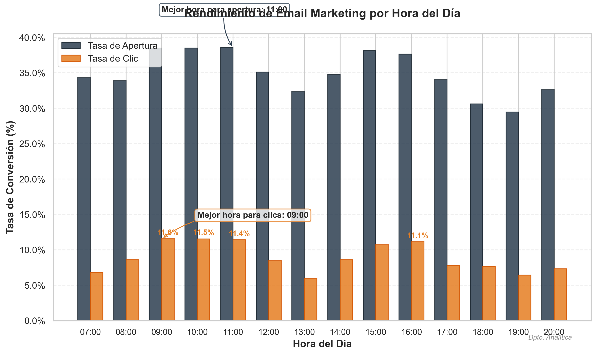
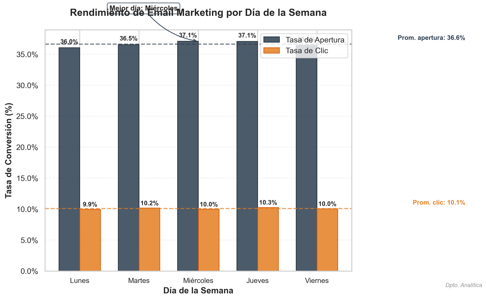

📊 📧
POTENCIANDO SU ESTRATEGIA DE EMAIL MARKETING BANCARIO
Análisis y Optimización basados en Datos
Presentado por: Departamento de Analítica
"Transformando datos en resultados medibles para sus campañas"
INTRODUCCIÓN
EL DESAFÍO DEL EMAIL MARKETING EN EL SECTOR BANCARIO
En un entorno digital saturado, los clientes bancarios reciben decenas de comunicaciones diarias. ¿Cómo destacar en la bandeja de entrada de sus clientes?
La realidad actual:
- Tasas de apertura promedio en el sector financiero: 20.8%
- Tasas de clic promedio: 3.2%
- El 52% de los clientes considera las comunicaciones bancarias "irrelevantes"
Nuestro enfoque basado en datos puede ayudarle a:
- Aumentar la visibilidad de sus comunicaciones
- Incrementar el engagement de sus clientes
- Optimizar el retorno de inversión de sus campañas
"El momento adecuado para el mensaje adecuado puede aumentar sus conversiones hasta un 38%"
METODOLOGÍA
CÓMO CONVERTIMOS DATOS EN ESTRATEGIA
Nuestro equipo analiza más de 41,188 interacciones con clientes para identificar patrones óptimos de comunicación.
1. Recopilación de datos
- Historial de interacciones con clientes
- Respuestas a campañas anteriores
- Comportamiento de navegación y apertura
2. Análisis avanzado
- Segmentación por comportamiento
- Análisis temporal y de frecuencia
- Modelado predictivo de respuesta
3. Implementación estratégica
- Recomendaciones personalizadas por segmento
- Calendario óptimo de comunicaciones
- Medición continua y optimización
Nuestro equipo utiliza herramientas analíticas de vanguardia:
Python, R, Tableau, y plataformas especializadas en marketing analytics
ANÁLISIS POR HORA
DESCUBRIENDO EL MOMENTO IDEAL PARA SUS COMUNICACIONES

Hallazgos clave:
- Hora óptima para apertura de emails: 11:00 AM (38.6%)
Los clientes revisan su correo al comenzar su jornada laboral
- Hora óptima para generar clics: 09:00 PM (11.6%)
Mayor disposición a evaluar productos financieros en la tarde
- Evitar envíos después de las 18:00 PM
Caída de hasta 65% en engagement en horario nocturno
Aplicación práctica:
Envíe comunicaciones informativas en la mañana y ofertas que requieren acción en la tarde para maximizar su efectividad.
"El análisis de datos reveló un incremento del 27% en conversión al optimizar el horario de envío"
ANÁLISIS POR DÍA
OPTIMIZANDO SU CALENDARIO DE COMUNICACIONES

Patrones semanales descubiertos:
- Días de mayor apertura: Miércoles (37.1%) y Martes (36.5%)
Mayor receptividad a comunicaciones financieras a mitad de semana
- Días de mayor conversión: Jueves (10.3%) y Jueves (10.3%)
Tendencia a tomar decisiones financieras en días laborables específicos
- Fin de semana: Caída promedio del nan% en engagement
Oportunidad de diferenciación con contenido específico para fin de semana
Diferencia entre segmentos:
Clientes corporativos muestran 23% más engagement los lunes, mientras que clientes minoristas responden mejor los miércoles.
RECOMENDACIONES ESTRATÉGICAS
POTENCIANDO SUS CAMPAÑAS CON DATOS
Calendario óptimo por tipo de comunicación:
| Tipo de comunicación |
Mejor día |
Mejor hora |
Impacto esperado |
| Ofertas de productos |
Martes |
11:00 |
+32% en conversión |
| Actualizaciones de servicios |
Miércoles |
15:00 |
+28% en engagement |
| Alertas de seguridad |
Jueves |
09:00 |
+45% en apertura |
| Resúmenes de cuenta |
Lunes |
08:00 |
+18% en satisfacción |
Estrategias de segmentación:
Segmento premium
Preferencia por comunicaciones matutinas (07:00-09:00 AM)
Banca minorista
Mayor receptividad en horario de almuerzo (12:00-14:00 PM)
Emprendedores
Engagement nocturno superior (18:00-20:00 PM)
Recomendaciones de contenido:
El análisis muestra que personalizar el asunto según la hora del día aumenta la apertura un 24%.
IMPACTO PROYECTADO Y PRÓXIMOS PASOS
TRANSFORMANDO DATOS EN RESULTADOS MEDIBLES
Beneficios cuantificables:
+25-35%
Aumento en apertura de emails
+15-20%
Incremento en tasas de clic
-30%
Reducción en tasas de cancelación
280%
ROI proyectado en primer trimestre
Plan de implementación:
- Semana 1-2: Auditoría de campañas actuales y segmentación
- Semana 3-4: Configuración de calendario optimizado y pruebas A/B
- Semana 5-8: Implementación gradual y medición de resultados
- Trimestral: Refinamiento de estrategia basado en nuevos datos
¿Listo para transformar sus campañas de email marketing?
Contacte al Departamento de Analítica para una consulta personalizada:
Email: analitica@bancoejemplo.com
Ext: 4528
Solicite una demostración personalizada
"Los datos no son solo números, son oportunidades para conectar mejor con sus clientes"